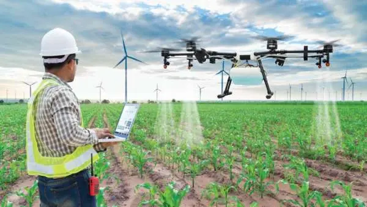
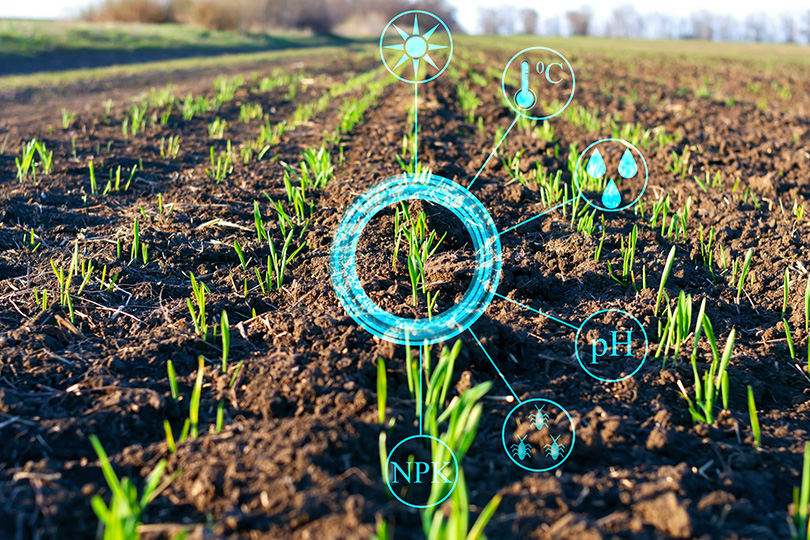

Where GIS Makes the Difference

Natural Resource Management
GIS technologies are used to monitor and assess natural resources such as water, forests, and mines — mapping utilization areas, identifying optimal investment sites, and monitoring sustainable use.

Urban & Municipal Planning
GIS supports urban development plans by analyzing population, roads, and public facilities — helping manage growth, traffic organization, and services like water and electricity.

Disaster & Emergency Management
GIS is applied in tracking natural disasters such as earthquakes, floods, and storms — providing hazard maps that help emergency teams coordinate and deliver aid efficiently.

Smart Agriculture
In agriculture, GIS is used to analyze soil, monitor crops, and determine the best farming practices for a region — improving productivity and managing resources effectively.
Find the Shortest Route
Click a start point, then a destination, to draw the shortest route between them.
🗺️ GIS Quiz
Enter your name to start: